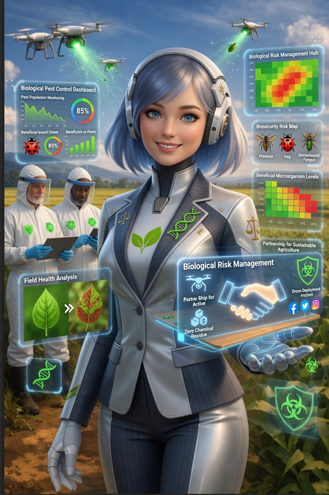

João, Huíla “Rotações com feijão melhoraram meu solo!”
Dica da semana Consórcio milho + mucuna aumenta nitrogênio.
Online
Dados seguros
Guia AgroLux
Conselheiro da Terra
🌤️ Sem alertas
🌿AgroLux
📜 Sobre
✔️ Partilha de técnicas locais ✔️ Dicas de rotação de culturas
Registar minha fazenda
Simulação de Produtividade

BioRisk – Gestão de Risco Biológico Monitoramento, alertas e manejo colaborativo de pragas
Integre ações de controle de vetores, pragas urbanas e rurais com uma plataforma que conecta técnicos, gestores públicos e comunidade. Dados em tempo real amplificados por redes sociais para resposta rápida.
Alertas rápidos no WhatsApp – notificações sobre focos de pragas, campanhas de prevenção e ações emergenciais.
Conteúdo educativo nos stories – compartilhe guias de identificação de vetores, manejo ambiental e biossegurança.
Comunidade de agentes e moradores – registre focos, troque experiências e amplie a vigilância participativa.
Dashboard epidemiológico – análise de riscos, índices de infestação e eficácia das intervenções.
Suporte à decisão em controle biológico – recomendações baseadas em espécies-alvo e condições ambientais.
Importante: A BioRisk não realiza controle químico direto e não substitui equipes técnicas especializadas. Nossa missão é entregar ferramentas de gestão, mapeamento coletivo e facilitar a comunicação entre os atores do controle de pragas e risco biológico. As ações em campo devem seguir diretrizes dos órgãos sanitários e legislativos.
Ativação imediata · Planos para prefeituras, cooperativas e consultores · 30 dias grátis